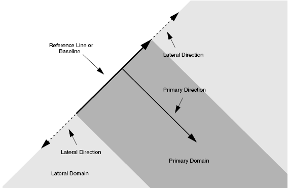
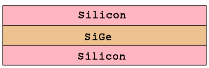
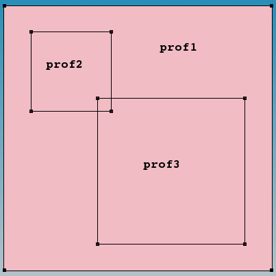

Sentaurus Mesh
4. Doping Definition
4.1 Defining Doping Profiles
4.2 Constant Profiles
4.3 Analytic Profiles
4.4 External Profiles
4.5 Three-Dimensional Doping Profile Construction
4.6 General Function Evaluator
4.7 Profile Overlap Controls
4.8 Doping Naming Conventions
4.9 Discrete-to-Continuous Dopant Profile Transition
Objectives
- To describe aspects of 2D and 3D profile generation.
4.1 Defining Doping Profiles
Examples of the features discussed in this section are all contained in the Sentaurus Workbench project Applications_Library/GettingStarted/snmesh/Profiles. To work with the project, copy it to a local directory within your Sentaurus Workbench working directory.
Sentaurus Mesh integrates the following profile generation–related capabilities:
- Generating 1D, 2D, and 3D profiles (doping, lifetime, mole fraction, stress, and so on) using constant or analytic profile descriptions, which substitute the necessity of having the numerically simulated profiles. This gives you quick access to a device simulation where a resulting profile is represented by the superposition of constant or analytic profiles.
- Having an interface between (2D or 3D) process and device simulators, allowing the transition of the doping profile from a process mesh to a mesh suitable for a device simulation.
- Constructing a 3D doping profile from 2D numerically simulated profiles using a profile sweep, slice, and rotation.
- Transferring a discrete doping profile, as a result of a kinetic Monte Carlo diffusion simulation, into a continuous doping profile to be used in a device electrical simulation.
4.2 Constant Profiles
A constant profile can be confined within a material, a region, or an arbitrary geometric element.
The first example demonstrates the concept of the constant profile definition on a simple 2D device structure, where the constant boron profile is confined within a rectangular window in the middle of the 2 μm x 2 μm silicon domain.
Figure 1 shows the profile variations performed with different lateral profile decays. Click to view the command files for the following Sentaurus Mesh tool instances in the Sentaurus Workbench project Profiles:
- Left image, zero decay length (DecayLength=0): Decay_Zero_msh.cmd
- Middle image, error function with 0.1 μm decay length (DecayLength=0.1): Decay_ErrFunc_msh.cmd
- Right image, Gaussian decay with 0.1 μm decay length (GaussDecayLength=0.1): Decay_Gauss_msh.cmd
{kind=link}
Figure 1. (Left) With DecayLength=0, (middle) DecayLength=0.1, and (right) GaussDecayLength=0.1. (Click image for full-size view.)
By default, the parameter DecayLength uses an error function, and GaussDecayLength uses a Gaussian function.
Figure 2 compares the profile cross-sections across the middle of the structure. Red-dashed lines indicate the locations of the constant profile primary domain.
{kind=link}
Figure 2. One-dimensional decay cross-section comparison. (Click image for full-size view.)
You can control the overlap behavior of the error function profiles from the left and right sides by using the lateralDiffusion option in the Interpolate section. For details about the constant profile definition, refer to the Sentaurus™ Mesh User Guide.
4.3 Analytic Profiles
Analytic profiles are specified using a definition, a reference window, and a placement.
The reference window is a directional line in two dimensions, and a rectangle or a polygon in three dimensions. The primary direction is the normal vector to the reference window, and the lateral direction is parallel to the reference window.
Figure 3 shows the schematics of the local coordinate system and the valid domain. The valid domain for both the primary and lateral functions is defined by sweeping the primary direction vector along the lateral direction. For a 3D analytic profile definition, instead of a baseline, a primary plane (or polygon) is used to define the reference window.

Figure 3. Concept of analytic profile definition.
The syntax for an analytic profile definition in the Definitions section is:
AnalyticalProfile "reference name" {
Species = "Dataset Name"
Function = Gauss(parameters) | Erf(parameters) | subMesh1D(parameters) |
Eval(parameters) | General(parameters)
LateralFunction = Gauss(parameters) | Erf(parameters) |
Eval(parameters)
}
where:
- Species indicates the species or variable name used for the analytic profile definition. Possible species names can be obtained from the datexcodes.txt file located in the $STROOT/tcad/$STRELEASE/lib directory.
- Function indicates the type of the component and its parameters used along the primary direction.
- LateralFunction defines the lateral component of the analytic profile.
For details about the analytic profile specification, refer to the Sentaurus™ Mesh User Guide.
Figure 4 demonstrates analytic profile definitions for a simple 2D device. The 2D profile baseline is specified in the middle of the device, as indicated by the white arrow. The Gaussian profile distribution has been chosen for the profile primary direction. In these examples, the profile primary domain and the lateral function distributions vary. By default, Sentaurus Mesh applies the profile on both sides of the baseline. Therefore, there is no need for a direction specification in the Placements section.
{kind=link}
Figure 4. (Left) With Direction=positive, (middle) Direction=both, and (right) Direction=both and Erf(Factor=0.8). (Click image for full-size view.)
For Figure 4 (left), the analytic profile definition with a one-sided primary domain and disabled lateral profile distribution is:
Definitions { ...
AnalyticalProfile "abc" {
Species = "BoronActiveConcentration"
Function = Gauss(PeakPos=0, PeakVal=1e+18, ValueAtDepth=1e15, Depth=0.5)
LateralFunction = Erf(Factor=0)
}
}
Placements { ...
AnalyticalProfile "abc" {
Reference = "abc"
ReferenceElement {
Element = Line [(1 0.75) (1 1.25)]
Direction = positive
}
}
}
For Figure 4 (middle), the analytic profile definition with a double-sided primary domain and deactivated lateral profile distribution is:
Definitions { ...
AnalyticalProfile "abc" {
Species = "BoronActiveConcentration"
Function = Gauss(PeakPos=0, PeakVal=1e+18, ValueAtDepth=1e15, Depth=0.5)
LateralFunction = Erf(Factor=0)
}
}
Placements { ...
AnalyticalProfile "abc" {
Reference = "abc"
ReferenceElement {
Element = Line [(1 0.75) (1 1.25)]
}
}
}
For Figure 4 (right), the analytic profile definition with a double-sided primary domain and activated lateral profile distribution is:
Definitions { ...
AnalyticalProfile "abc" {
Species = "BoronActiveConcentration"
Function = Gauss(PeakPos=0, PeakVal=1e+18, ValueAtDepth=1e15, Depth=0.5)
LateralFunction = Erf(Factor=0.8)
}
}
Placements { ...
AnalyticalProfile "abc" {
Reference = "abc"
ReferenceElement {
Element = Line [(1 0.75) (1 1.25)]
}
}
}
Click to view the command files for the corresponding Sentaurus Mesh tool instances for these examples:
- Direction_A: Direction_A_msh.cmd
- Direction_B: Direction_B_msh.cmd
- Direction_C: Direction_C_msh.cmd
All of these command files are available in the Sentaurus Workbench project Applications_Library/GettingStarted/snmesh/Profiles.
The next example illustrates the analytic profile definition for a 3D device with the polygonal region used as the primary plane.
{kind=link}
Figure 5. (Left) Polygonal region definition as a primary domain defined with Sentaurus Structure Editor and (right) resulting boron profile and 3D mesh as shown by Sentaurus Visual; the Value Blanking option is used to show the profile inside the device. (Click image for full-size view.)
Click to view the command file for the Sentaurus Mesh tool instance Polygon Polygon_msh.cmd.
Together with the above examples, this command file is contained in the Sentaurus Workbench project Applications_Library/GettingStarted/snmesh/Profiles.
4.4 External Profiles
External doping profiles from either process or device simulation results can be used to refine a mesh to make it suitable for a subsequent device simulation.
There are distinctive external profile definitions in Sentaurus Mesh:
- External 1D profiles can be used to construct 2D or 3D profiles using the analytic profile description (see Section 4.3 Analytic Profiles). Instead of a Gaussian analytic profile, a 1D external doping profile is placed along the primary direction. For the lateral direction outside a primary domain, the same analytic functions are used.
- Submeshes have the same spatial dimension as a target device. The datasets defined on the external mesh then are interpolated to the newly generated mesh.
4.4.1 External 1D Profiles
The following example demonstrates how to incorporate an external 1D profile into a 2D device using the analytic profile description. The external 1D arsenic profile shown in Figure 6 (left) is incorporated into the 2D device structure using the subMesh1D option:
Definitions { ...
AnalyticalProfile "AnalyticalProfileDefinition_1" {
Function = subMesh1D(datafile = "@pwd@/1d_As.plx", scale = 1)
LateralFunction = Gauss(Factor = 0.2)
}
}
This example is contained in the Sentaurus Workbench project Applications_Library/GettingStarted/snmesh/SubMeshes.
Click to view the command file of the Sentaurus Mesh tool instance SubMesh1d SubMesh1d_msh.cmd.
The red arrow in Figure 6 (right) indicates the position of the 1D profile baseline. Outside the primary domain, the Gaussian profile distribution is used with a 0.2 factor with respect to the profile standard deviation along the primary direction.
{kind=link}
Figure 6. (Left) Referenced 1D arsenic profile and (right) resulting 2D doping profile with red arrow indicating the location of the profile baseline. (Click image for full-size view.)
4.4.2 Submeshes
The next example demonstrates how to incorporate a 2D external profile as a submesh to construct the mesh or doping profile suitable for device simulation. The Sentaurus Workbench project SubMeshes from the Applications_Library directory will be used here.
The goal of this example is to generate a mesh suitable for a device electrical simulation and to interpolate the doping and stress distributions from the original process grid onto the newly generated mesh. Due to the device symmetry, only half of the structure was simulated by Sentaurus Process (see the Sentaurus Process module). The structure remeshing was performed using the SubMesh option:
Definitions { ...
SubMesh "SubMesh" {
Geofile = "@pwd@/submesh_input2.tdr"
}
}
Each individual dopant as well as stress components are interpolated from the original to the newly generated mesh. The original arsenic doping inside the poly gate is replaced by the constant doping using the Replace option:
Constant "PlaceCD.Gate" {
Reference = "Const.Gate"
Replace
EvaluateWindow {
Element = material ["PolySi"]
DecayLength = 0
}
}
The original grid and the resulting doping distribution after Sentaurus Process are shown in Figure 7 (left). The resulting mesh and the doping distribution, ready for Sentaurus Device, are shown in Figure 7 (right).
{kind=link}
Figure 7. (Left) Original 2D mesh and doping profile from Sentaurus Process and (right) final mesh and doping profile distribution after Sentaurus Mesh. (Click image for full-size view.)
This example is contained in the Sentaurus Workbench project Applications_Library/GettingStarted/snmesh/SubMeshes.
Click to view the command file of the Sentaurus Mesh tool instance SubMesh2d SubMesh2d_msh.cmd.
To simulate the MOSFET device electrical behavior, the structure and mesh are mirrored at the x=0 axis location by Sentaurus Data Explorer, using the command:
tdx -mtt -x -ren drain=source test2d_half_subm_msh test2d_subm_msh
Alternatively, you can use the reflection capabilities of Sentaurus Mesh (see Section 8.6 Reflection).
This guarantees perfect mesh symmetry for the resulting device structure (see Figure 8).
{kind=link}
Figure 8. Mirrored device. (Click image for full-size view.)
An important feature of the SubMesh option is how the profile extrapolation is handled when the SubMesh domain and the target device geometries do not match (see Figure 9 (left)). In this case, Sentaurus Mesh extrudes all profiles outside the SubMesh domain, having them uniformly distributed, as shown in Figure 9 (right).
{kind=link}
Figure 9. (Left) Mismatch of SubMesh and target device domains and (right) StressXX component of the stress tensor after remeshing. (Click image for full-size view.)
4.4.3 Material-Matching Options for Submeshes
The next example demonstrates the use of the Ignoremat option of SubMesh.
The standard behavior of submesh interpolation is that the interpolation occurs only if the mesh vertex in a target device belongs to the same material as in a submesh device. If materials in a submesh device and a target device at the same vertex location are different, the profile interpolation for this vertex is suppressed. To overcome this limitation, you can specify Ignoremat in a submesh Placements section, which instructs Sentaurus Mesh to allow a profile interpolation, regardless of whether the materials match or do not match:
Placements {...
SubMesh "SubMesh" {
Reference = "SubMesh"
Ignoremat
}
}
Figure 10 demonstrates this behavior. The remeshing is performed for the target device, which differs from the submesh device by having a polysilicon region in the middle of the structure instead of silicon.
{kind=link}
Figure 10. Test cases showing effect of Ignoremat option. (Click image for full-size view.)
Figure 11 shows the results of interpolation. The submesh device is uniformly doped with boron (left image). By default, Sentaurus Mesh suppresses the doping interpolation inside the polysilicon material for the target device (middle image). Switching on the Ignoremat option activates the interpolation inside nonmatching materials and produces exactly the same profile as in the submesh (right image).
{kind=link}
Figure 11. (Left) Submesh device with uniform 1e16 boron doping distribution, (middle) target device showing Sentaurus Mesh default interpolation behavior and boron concentration inside polysilicon is suppressed, and (right) demonstration of Ignoremat behavior and boron doping is also interpolated inside polysilicon material. (Click image for full-size view.)
Besides the submesh interpolation schemes previously described, you can specify the option MatchMaterialType:
Placements {...
SubMesh "SubMesh" {
Reference = "SubMesh"
MatchMaterialType
}
}
When MatchMaterialType is specified, the submesh attempts to match equivalent material types (for example, semiconductor-semiconductor, insulator-insulator, conductor-conductor) instead of trying to match material names when looking up values from which to interpolate.
The last example illustrates the Sentaurus Mesh capability to remesh the device, using the previously obtained device simulation result taken as a submesh.
It often happens that a device needs remeshing after device simulation, based on a solution of a certain carrier transport task. In this example, the remeshing is based on the profile of the carrier impact ionization rate, obtained on a coarse mesh (see Figure 12 (left)). The peak ionization rate appears to be in a region with the coarse mesh that needs to be remeshed. This solution is taken as a submesh, then the mesh refinement based on the impact ionization values within a given range is used as a refinement criterion together with the mesh refinement on doping:
Definitions {
Refinement "Default Region" {
MaxElementSize = (1 1 )
MinElementSize = (0.05 0.05 )
RefineFunction = MaxInterval(
Variable = "ImpactIonization",
cmin=1e20, cmax=1e30, targetLength=0.05,
scaling=1, rolloff
)
RefineFunction = MaxTransDiff(Variable="DopingConcentration", Value=1)
}
...
}
The option is activated with the MaxInterval keyword, where Variable defines the dataset field name, on which the mesh refinement is produced. cmin and cmax define the interval values to be considered by the refinement procedure. The algorithm analyzes each edge in a refinement tree cell and refines the edge if the data values at the endpoints overlap a given interval and the edge is longer than the maximum edge length, defined by the targetLength value, which sets the constant mesh resolution within the given range of field values. The coarser value between MinElementSize and targetLength is used in this case.
With rolloff switched on, the scaling parameter value determines how the mesh step transition towards the outside of the refinement domain is applied, according to the following formula:
targetLengthOutside = targetLength*(1 + log(Ca) - log(Cb))^2 * scaling
where Ca and Cb are the variable values at the endpoints of the edge.
The resulting mesh, shown in Figure 12 (right), demonstrates the finer mesh refinement within the area with large values of the impact ionization rate and large doping profile gradients.
{kind=link}
Figure 12. (Left) The previously calculated carrier impact ionization rate distribution on a coarse mesh is taken as a submesh for mesh adaptive refinement and (right) the mesh adapted to the impact ionization rate profile after remeshing. (Click image for full-size view.)
This example is contained in the Sentaurus Workbench project Applications_Library/GettingStarted/snmesh/SubMeshes.
Click to view the command file of the Sentaurus Mesh tool instance SubMesh2dII SubMesh2dII_msh.cmd.
4.5 Three-Dimensional Doping Profile Construction
Sentaurus Mesh allows different 2D profile transformations such as rotation, extrusion, and sweeping. It is also possible to sweep a 2D geometry and a 2D profile along the same path simultaneously and to apply a similar sweep to the mesh refinement window for a more accurate mesh spatial discretization of a device.
The following example demonstrates the different techniques of 1D or 2D profile incorporation into a 3D device structure by applying several profile transformations, including 1D to 2D profile transfer, 2D profile rotation, extrusion, and sweeping.
The Sentaurus Mesh command files featured in this section are in the Sentaurus Workbench project Applications_Library/GettingStarted/snmesh/ProfileConstruction3D. To work with the project, start Sentaurus Workbench and copy the project ProfileConstruction3D to a local directory within the Sentaurus Workbench working directory.
As the first step, the 2D profile is created from the SubMesh1d profile using the analytic profile specification:
Definitions {
AnalyticalProfile "AnalyticalProfileDefinition_1" {
Function = subMesh1D(datafile = "@pwd@/1d_As.plx", scale = 1)
LateralFunction = Gauss(Factor = 0.0)
}
...
}
Placements {
AnalyticalProfile "AnalyticalProfilePlacement_1" {
Reference = "AnalyticalProfileDefinition_1"
ReferenceElement {Element = Line [(0 -0.5) (0 1.5)]}
}
...
}
The same 1D doping profile as described in Section 4.4.2 Submeshes is used here.
{kind=link}
Figure 13. (Left) One-dimensional doping profile and (right) 2D profile. (Click image for full-size view.)
In the second step, the 2D profile is incorporated into the 3D domain using a combination of different submesh placements, involving a profile shift as well as rotation, sweeping, and replacement techniques (see Figure 14).
{kind=link}
Figure 14. Three-dimensional profile construction technique. (Click image for full-size view.)
Click to view the command file rotsweep3D_msh.cmd. This command file produces the final 3D doping profile, shown in the lower-right image of Figure 14.
With the third step, the above 3D profile is cut using the Slice operation in the Tools section of the command file (see Section 8. Tools Section):
Tools {
Slice {
normal = (0 0 1)
location = (0. 0. 0.)
}
}
{kind=link}
Figure 15. The result of a 2D cut using the Slice operation. (Click image for full-size view.)
Click to view the command file slice3Dto2D_msh.cmd. This command file produces the 2D doping profile shown in Figure 15 (bottom).
In the last step, the 2D profile is incorporated into the 3D device structure applying the profile rotation around the z-axis. The corresponding 3D device boundary is generated using Sentaurus Structure Editor.
{kind=link}
Figure 16. (Left) The 3D structure used for profile rotation and (right) the resulting 3D profile after rotation. (Click image for full-size view.)
{kind=link}
Figure 17. Resulting mesh after profile rotation. (Click image for full-size view.)
Click to view the command file make_torus_msh.cmd. This command file produces the 3D doping profile in Figure 17.
4.6 General Function Evaluator
Apart from the predefined Gaussian and error functions, you can define an arbitrary general analytic function that can be used to define primary and lateral profile distributions for analytic profile definitions. The general function evaluator (GFE) uses the following syntax:
AnalyticalProfile "reference name" {
Function = General(init="variable assignments",
function="evaluated expression",
value=<default_return_value>)
LateralFunction = General(init = "variable assignments",
function = "evaluated expression")
}
where:
- init is a semicolon-separated list of assignments for variables that are used in the Function expression.
- function is an expression that is evaluated for every query.
- value is the default return value if the evaluation fails.
The first example demonstrates the application of the GFE to construct a linearly graded doping profile. For the structure in Figure 18, the linearly graded phosphorus doping profile is defined inside the SiGe region, which is sandwiched between two uniformly doped silicon regions.
This example is contained in the Sentaurus Workbench project Applications_Library/GettingStarted/snmesh/EvaluateFunction.
Click to view the command file of the Sentaurus Mesh tool instance called linear linear_msh.cmd.

Figure 18. Test structure showing linear doping.
The following syntax specifies a linearly graded profile inside the SiGe region:
Definitions {
AnalyticalProfile "linear" {
Species = "PhosphorusActiveConcentration"
Function = General( init = "fmax=10^18;fmin=10^16"
function = "10.*(fmin-fmax)*x+2.*fmax-fmin" value = 0)
}
...
}
The function expression ensures that the profile values at the outer boundaries of the SiGe layer meet the specified boundary conditions: 1e18 cm-3 at x = 0.1 μm and 1e16 cm-3 at x = 0.2 μm.
{kind=link}
Figure 19. Linear doping and profile distribution. (Click image for full-size view.)
Click to view the command file layers1_dvs.cmd. Sentaurus Structure Editor uses this command file to produce such boundary and meshing command files and build the mesh.
The next example illustrates the use of the GFE to produce an automatic mesh refinement on an arbitrary function. In this example, the test profile is specified using the GFE:
AnalyticProfile "gfe_profile" {
Species = "P2"
Function = General(init="c0=10^5;lx=0.1;ly=0.1;lz=0.1",
function="c0/exp((x/lx)^2)/exp((y/ly)^2)/exp((z/lz)^2)")
}
The example uses the species called "P2", which is declared in the $STROOT/tcad/$STRELEASE/lib/datexcodes.txt file. The mesh refinement is based on the "P2" test profile distribution. The test 3D profile distribution and the final 3D mesh are shown in Figure 20.
{kind=link}
Figure 20. (Left) Test "P2" species profile generated by the GFE and (right) mesh adapted to the test profile distribution. (Click image for full-size view.)
This example is contained in the Sentaurus Workbench project Applications_Library/GettingStarted/snmesh/EvaluateFunction.
Click to view the command file for the Sentaurus Mesh tool instance GFEmesh GFEmesh_msh.cmd.
4.7 Profile Overlap Controls
By default, the specified profiles are superimposed when they overlap. Switching on the Replace option allows you to change this behavior. In this case, the order in which profiles are placed is important. The next example demonstrates the use of the profile overlap controls. Three constant profiles are introduced that overlap (see Figure 21).

Figure 21. "prof1" is the background constant boron doping profile with 1e16 cm-3 concentration; "prof2" is the constant boron doping profile with 1e18 cm-3 concentration; and "prof3" is the constant arsenic doping profile with 1e18 cm-3 concentration.
Figure 22 shows the resulting doping profile distributions (Nr = Ndonor – Nacceptor), illustrating the Sentaurus Mesh behavior when different overlap control scenarios are used:
- For Scenario A, the profile order, that is, how they appear in the Placements section of the command file, corresponds to the profile numbering, together with the default rule for profile overlay, which requires a profile sum at any spatial mesh vertex position. Therefore, for the area where high-doped boron and arsenic doping profiles overlap, the resulting doping profile concentration is equal to the background low-doped boron concentration (shown in light blue).
- For Scenario B, the same profile order is used as in Scenario A but the Replace option is specified for the prof2 profile. Therefore, the prof2 profile replaces the previously placed prof1 profile and then is overlapped with the prof3 profile, which results in zero net doping concentration within the overlay region (shown in green).
- Scenario C differs from Scenario B by adding the Replace option to the prof3 profile specification. In this case, the prof3 profile replaces both underlying boron profiles, as can be seen from the image.
- For Scenario D, the order, that is, how the profiles prof2 and prof3 appear in the command file, is changed compared to Scenario C, which results in the prof2 profile winning over other profiles.
{kind=link}
Figure 22. (Upper left) Scenario A, (upper right) Scenario B, (lower left) Scenario C, and (lower right) Scenario D. (Click image for full-size view.)
The Sentaurus Mesh command files featured in this section are all contained in the Sentaurus Workbench project Applications_Library/GettingStarted/snmesh/ProfileOverlap. To work with the project, start Sentaurus Workbench and copy the project ProfileOverlap to a local directory within the Sentaurus Workbench working directory.
Click to view the command files for the different scenarios for this example:
- Scenario A: OverlapA_msh.cmd
- Scenario B: OverlapB_msh.cmd
- Scenario C: OverlapC_msh.cmd
- Scenario D: OverlapD_msh.cmd
4.8 Doping Naming Conventions
Transferring doping profiles from Sentaurus Process to Sentaurus Device using the Sentaurus Mesh SubMesh option is relatively straightforward. However, the doping profile compilation with constant or analytic profiles requires a certain naming convention to guarantee that profiles are handled properly by the device simulator.
Sentaurus Mesh uses active donor and acceptor dopants to calculate the resulting (net) doping profile (Nr):
Nr = Sum(Nd) - Sum(Na)
where:
- Sum() is the sum of all present dopants of either donor or acceptor type for each mesh vertex spatial location inside the device structure.
- Nd is an active donor dopant concentration.
- Na is an active acceptor dopant concentration.
For silicon material as well as for other semiconductors from group IV of the periodic table of elements, special names are reserved for donor and acceptor dopants, which are defined in the $STROOT/tcad/$STRELEASE/lib/datexcodes.txt file.
For donor dopants, the most important names are:
- AntimonyActiveConcentration
- ArsenicActiveConcentration
- PhosphorusActiveConcentration
For acceptor dopants, the most important names are:
- AluminumActiveConcentration
- BerylliumActiveConcentration
- BoronActiveConcentration
- IndiumActiveConcentration
While constructing doping profiles, Sentaurus Mesh calculates the resulting (net) doping profile applying the previous formula and saves individual dopants and the resulting doping profile in a TDR file. For each individual dopant, its profile is interpolated to a final mesh. However, for a resulting doping profile, the following rules apply:
- If a dopant is defined that has one of the mentioned names, it is used for a resulting doping profile calculation.
- If there are no profiles with the mentioned *ActiveConcentration names, Sentaurus Mesh checks whether there are corresponding profiles with total concentrations *Concentration, for example PhosphorusConcentration, and uses them to calculate a resulting doping profile.
- If a profile called DopingConcentration is specified in the command file, it is summed with the resulting doping profile calculated with the previous formula.
- If there are dopants with the names NDopantActiveConcentration or PDopantActiveConcentration defined, they are used as donor and acceptor dopants, respectively, in the resulting doping calculation.
The latter rule allows you to specify the doping distribution for III–V or II–VI semiconductor materials, such as GaAs and HgTe, and their compounds.
The following examples illustrate these naming conventions. The same structure and profile definitions as in the example in Section 4.7 Profile Overlap Controls are used here.
Four cases with different profile names were defined (see Figure 23):
- For Example 1, all profiles are defined as active. These values indicate the resulting doping concentration at each profile location. The background net doping concentration within the area indicated as prof1 is negative, since only BoronActiveConcentration doping (acceptor type) is specified there. For overlapping profiles, the doping superposition is applied according to the above formula.
- For Example 2, the BoronConcentration species name has been chosen for the prof1 profile instead of BoronActiveConcentration, as in Example 1. Since there are still active dopant specifications defined for the prof2 and prof3 profiles, the prof1 profile definition is ignored when the resulting doping profile calculation is performed (you can see that the doping profile value inside the prof1 domain is zero).
- For Example 3, the species name for the prof1 doping profile is DopingConcentration. Therefore, the resulting net doping is calculated according to Rule 3 as a superposition of the individual active dopants and the prof1 doping profile.
- For Example 4, the NDopantActiveConcentration and PDopantActiveConcentration names are used instead of BoronActiveConcentration and ArsenicActiveConcentration to define the doping profile. As can be seen, such definitions produce exactly the same resulting doping profile, as in Example 1.
{kind=link}
Figure 23. (Upper left) Example 1, (upper right) Example 2, (lower left) Example 3, and (lower right) Example 4. (Click image for full-size view.)
The Sentaurus Mesh command files featured in this section are in the Sentaurus Workbench project Applications_Library/GettingStarted/snmesh/DopingNameConventions. To work with the project, start Sentaurus Workbench and copy the project DopingNameConventions to a local directory within the Sentaurus Workbench working directory.
Click to view the command files for the different examples:
- Example 1: nameA_msh.cmd
- Example 2: nameB_msh.cmd
- Example 3: nameC_msh.cmd
- Example 4: nameD_msh.cmd
4.9 Discrete-to-Continuous Dopant Profile Transition
Sentaurus Mesh can create continuous doping profiles from discrete dopant distributions obtained using Sentaurus Process Kinetic Monte Carlo (Sentaurus Process KMC), which then can be used in device simulations.
Such a procedure is called deatomization, which is accomplished by associating a doping function with each discrete dopant. The union of all such doping functions defines the final doping profile.
The next example demonstrates the doping deatomization procedure. A 3D MOS transistor structure and atomized KMC species are shown in Figure 24. Note the Manhattan-type geometry of the originally rounded shapes, which is the result of using a tensor grid in the Sentaurus Process KMC simulation.
{kind=link}
Figure 24. Result of 3D KMC simulation showing locations of the KMC species. Blue points indicate the location of single atom defects, mostly dopants. Cyan points indicate the location of impurity clusters. (Click image for full-size view.)
The discrete KMC results are loaded into Sentaurus Mesh where they are deatomized using a normalized charge density approach. The charge density functions for all dopants are then summed to form the final doping distribution to be used in a subsequent device simulation.
To deatomize the KMC dopants, the Particle section must be declared inside the Definitions section of the Sentaurus Mesh command file for each individual dopant. The following syntax illustrates the parameters of the Particle section to deatomize boron particles:
Particle "BoronParticles" {
ParticleFile = "@pwd@/kmc_final.tdr"
Species = "BoronActiveConcentration"
ScreeningFactor = 3.5e6
AutoScreeningFactor
Normalization
}
where:
- ParticleFile indicates the location of the source for the boron particles profile, which is deatomized into BoronActiveConcentration.
- ScreeningFactor is the inverse of the screening length used for a profile deatomization.
- AutoScreeningFactor switches on an automatic screening factor calculation for each discrete dopant based on the local density of dopants.
- Normalization switches on the doping normalization for discrete dopants, whose doping function extends beyond the boundary.
Refer to the Sentaurus™ Mesh User Guide for details.
Figure 25 shows the results of the boron and arsenic profile deatomizations.
{kind=link}
Figure 25. (Left) Deatomized boron profile after Sentaurus Mesh and (right) deatomized arsenic profile after Sentaurus Mesh. (Click image for full-size view.)
The complete project can be investigated from within Sentaurus Workbench in the directory Applications_Library/GettingStarted/snmesh/Deatomize.
Click to view the command file KMC_msh.cmd.
Right-click to save the TDR submesh file kmc_final.tdr from Sentaurus Process KMC (17 MB) used in this example.
Copyright © 2022 Synopsys, Inc. All rights reserved.